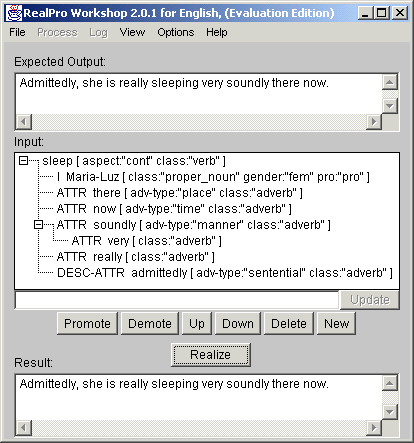

RealPro Workshop
Introduction
This distribution is provided with RealPro Workshop GUI, a Java application
containing a simple graphical editor for deep-syntactic structures.
Once a source language DSyntS has been defined or loaded, it can
then be realized in the target language (English by default).
RealPro Workshop is intended for two main goals:
- Helping a developer verify the DSyntS processing;
- Helping a new user learn about DSyntS representations and
their processing in RealPro Workshop.
GUI Description
The following figure gives a snapshot of RealPro Workshop GUI.

Figure 1: RealPro Workshop GUI
RealPro Workshop GUI is composed of 7 main areas:
- "Top Bar Area"... Consists of the top menu items including:
- "File"... Functions to open and save DSyntS.
- "Process"... Functions to process step by step the DSyntS (Not available in evaluation version).
- "Log"... Functions to control the error/trace logs (Not available in evaluation version).
- "View"... Functions to control the display/hiding of widgets.
- "Options"... Functions to set the realization configuration.
- "Help"... Functions to display information about RealPro Workshop.
- "Expected Output Area" (Optional)... Displays the intended output sentence
(or phrase) as defined in the field "OUTPUT" in the DSyntS text file.
- "Input DSyntS Area"... Area below the "Input" label displaying the DSyntS
as a tree structure. Supports only mouse click and no direct editing.
- "Node Editing Window Area"... Text area below the DSyntS Area used to edit
the DSynt node currently selected.
- "Tree Editing Button Area"... Buttons directly below the Node Editing Window
Area used to modify the DSyntS structure by operating on the node currently
selected in the DSyntS Area: "Promote", "Demote", "Up", "Down", "Delete", "New".
- "Realize Button Area"... Button directly below the Tree Editing Button Area for
realizing the current DSyntS.
- "Resulting Sentence Area"... Bottom text area below the "Result" label used to display
a generated sentence after realization.
Loading a Deep-Syntactic Structure from a TEXT File
The RealPro Workshop GUI can let the user load a deep-syntactic structure
from a specification contained in a TEXT file.
To open a DSyntS specified in a TEXT file, follow these steps:
- From RealPro Workshop GUI, select the menu item "File | Open";
- Use the file browser to select a DSyntS to open (default extension *.dss).
If opening is successful, the DSyntS will be displayed as a tree structure
in the RealPro Workshop GUI under the label "input". If opening is not successful,
an error message is displayed in a message box.
Several examples of DSyntS files are provided with this distribution
under the directory "DSyntS". The document "RealPro General English
Grammar User Manual" also contains several examples
and describes the feature system for English realization.
Here is an example of valid TEXT specification:
OUTPUT:
This is a test.
END:
DSYNTS:
BE [ class:verb ]
(
I THIS [ class:demonstrative_pronoun number:sg ]
II TEST [ class:common_noun article:indef ]
)
END:
In this specification, "OUTPUT" is an optional field giving the expected
output for documentation purposes. The field "DSYNTS" specifies the actual
DSyntS.
Note that in order to be loaded properly, the feature system used in the
DSyntS must correspond to the one described in the user manual.
Creating a New Deep-Syntactic Structure
To create a new Deep-Syntactic Structure from RealPro Workshop GUI, follow these
steps:
- Save if necessary the current DSyntS; otherwise, it will be lost.
- Click on the button "New" found below the DSyntS area.
- Type the node specification in the "Node Editing Window".
- Edit the DSyntS.
Editing an Existing Deep-Syntactic Structure
To edit an existing Deep-Syntactic Structure displayed in RealPro Workshop GUI,
follow these steps:
- In the DSyntS Area, click on a node to modify.
- After a node in the DSyntS Area has been selected, its content (lexeme
label and features) will be displayed in the Node Editing Window Area.
To edit the information, just type and/or delete characters in the string,
then press the "Update" button to confirm the changes.
- When editing a DSyntS node Ni, the syntax to follow is the following:
- Ri Li [ Fi1 Fi2 Fi3 ... Fin ]
where
- Ri is the relation name with its governor (none if Ni is the root).
- Li is the lexeme label.
- Each Fij is a feature associated with the node.
E.g.
- I BOOK [ class:common_noun number:sg ]
When editing a DSyntS node in the Node Editing Window Area, at least one
space must separate:
- the relation name from the lexeme label
- the lexeme label from the opening bracket '['
- a feature from a bracket '[' or ']'
- a feature from another feature